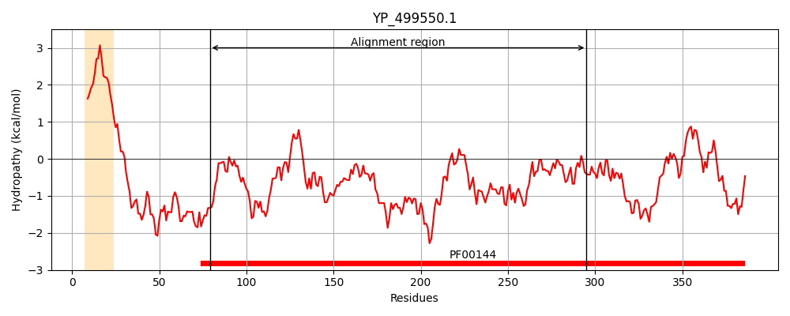
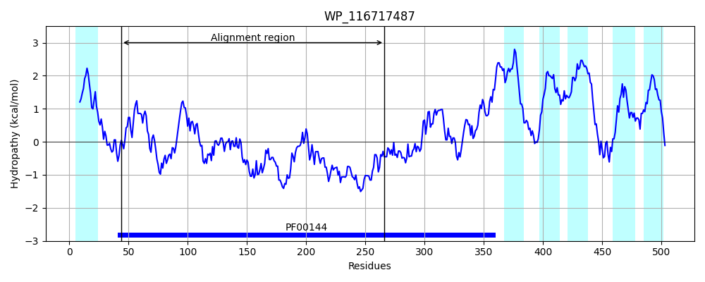
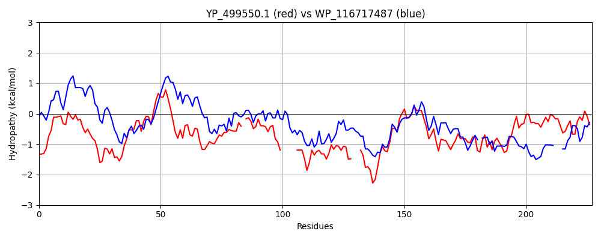

Hit Accession: WP_116717487
Hit TCID: 9.B.306.1.3
Hit Description: gnl|BL_ORD_ID|21793 gnl|TC-DB|WP_116717487|9.B.306.1.3 class A beta-lactamase-related serine hydrolase [Anaerolineales bacterium]
Mach Len: 227
e:0.000000
Query TMS Count : 1
Hit TMS Count: 6
TMS-Overlap Score: 0.000000
Predicted Substrates:None
BLAST Alignment:
Score: 212 , Bit scores: 86 bits, E-value: 2.3e-18, Alignment length: 227, Percentage identity: 26
Query: 79 IDKYLQSSLFNGSVAIYENGKLKMSKGYGYQDFEKGIKNTPNTMFLIGSAQKFSTGLLLKQLEEEHKININDPVSKYLPWFKTS-KPIPLKDLMLHQSGL------YKYKSSKDYKNLDQAVKAIQKRG---IDPKKYKKHMYNDGNYLVLAKVIEEVTGKSYAENYYTKIGDPLKLQHTAFYDEQPFKKYLAKGYAYNSTGLSFLRPNILDQYYGAGNLYMTPTDM 295
++++ +GSV I ++G + +++GYG D +GI NTP T F + S K T + + L+ + ++N+ DP+ ++ + + I + L+ H SGL K+++ + I+ G ++ + +++ YN+ Y +LA +IE+ +G+SYA+ I PL ++ + Y++ L Y Y++TG + + I D G G LY T D+
Sbjct: 44 LEQWALDGTISGSVLIAQDGVVFLNEGYGLADRAQGIPNTPGTRFHLASLSKSFTAMAILILQSQGRLNVQDPICNHMVRCSEAWQGITIHQLLTHTSGLSPRLHDIVSKAARKPEAPPDPGYYIEIAGEVPLETRPGEQYDYNNFGYTLLAHIIEQASGQSYADFLDKNIFTPLNMRDSG-YEDSSSGGALGYSYRYDTTGAEYEQWPISD---GEGQLYSTTGDL 266 | Protein Hydropathy Plots: |
|---|
|  |  |
Pairwise Alignment-Hydropathy Plot:
|
|---|
|  |